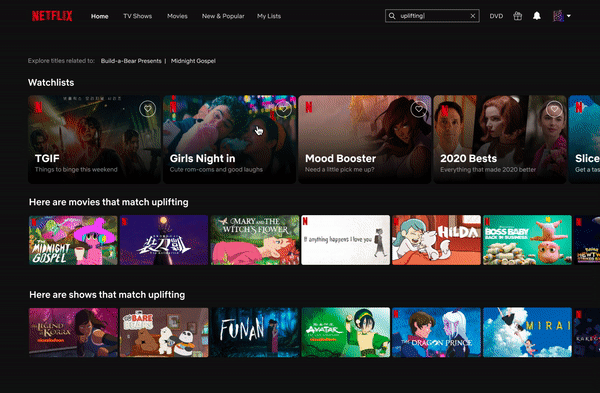
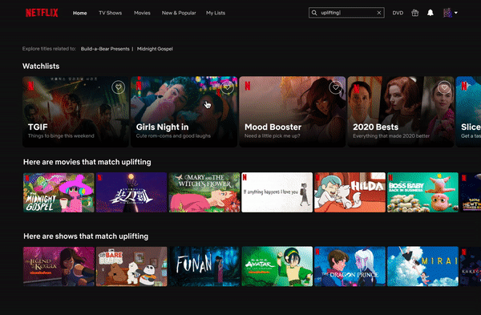

Understanding customer loyalty and why members frequently leave Netflix. How can we convince them to stay?
Netflix is the world’s leading streaming entertainment platform (SVOD), with 195 million paid memberships in 190+ countries. For a flat fee, members can watch unlimited shows & movies.
Many members leave and return to Netflix. They also frequently switch between other streaming video-on-demand (SVOD) services without penalty, known as churning.
Netflix’s Consumer Insights Team challenged Berkeley Innovation, a student-led design consultancy at UC Berkeley, to tackle project Please Don’t Leave: a narrative-building UX research project aiming to uncover the subtle reasons why members leave Netflix and how to stop them from canceling from a loyalty perspective.

Currently, if you type a keyword into Netflix's search bar, you will be greeted with an infinite grid of titles—a confusing mélange of movies and shows. This both lengthens the search process and amplifies the ambiguity of Netflix's algorithm. To better communicate Netflix's search algorithm to users, we visualized movies and shows that match keywords relating to mood, feeling, genre, etc, by creating sections for the search UI (i.e. here are movies like what you searched for). This eliminates some of the guesswork involved where users are stuck searching for content that they don't know whether or not they'll truly enjoy.
.gif)
People are social creatures — whether its gossiping about our favourite TV shows or sharing movie recommendations via word of mouth, many people rely on positive verification or referrals from their immediate connections (friends, family, social circle) before committing to watch a series. We created My Watchlists as a sub-feature of the already existing My Lists tab. Watchlists are shareable collections of shows and movies curated by Netflix and the user based on different moods, ambiences, or occasions (eg. Date Night, TGIF, etc). Through curating the groupings of content in specific lists (similar to music playlists), we visualize the intent behind recommendations, and make the show/movie search a collaborative effort between Netflix and the user.
.gif) 
Click to jump to a section


People tend to humanize and personify companies as they do with pets, cars, etc.
The issue we face with Netflix is about how people feel about things. Because a company is trying to provide a service and be loved, it is especially vital to consider this version of personification — this is much more analogous to a humanized relationship than it is with your car, where Netflix can actually be a partner. Since loyalty is sought, this is a great framework for our research because we evaluating if Netflix is a responsible partner in their relationship with its members.
Using sources from our secondary readings, we identified 5 main components of an ideal human relationship...


We began our research with interviews, which allowed us to get to know Netflix’s current members, ex-members, and never returners on a personal level. 13 one-hour-long interviews were conducted with questions grouped into the following sections:

After completing our interviews, we affinity mapped our interview insights to organize the themes and pain points brought up by members.


We grouped key themes into 3 broad overlapping branches pictured below (the 3 Rs).
In general, we discovered that there are two types of relationships people form with Netflix, including (1) transactional relationships defined by members getting as much as they can from Netflix, or (2) personal connections developed through communication and trust. Members are also concerned about the reputation of the brands that they chose to support, most often aligning themselves with socially relevant brands that share their values, exemplify innovation, and community-mindedness. Finally, members want to support a brand with a reliable price with high-quality content and product offerings.
To further identify patterns in how members form loyalty to a brand, we created a concept map to better visualize relationships between the grander themes of our findings
The concept map below synthesizes insights directly from our interviews and affinity clusters.

After understanding the pain points of our members in qualitative research, we conducted qualitative research to assess impact and reasons members may cancel their membership.
In a survey, 292 people who don't love Netflix were asked to rank reasons that influence their decision to cancel their Netflix membership. The following reasons were related to outcome variables of satisfaction and willingness to stay with Netflix.
The most common reason people cancel Netflix is because there aren’t enough good movies on Netflix. The second most common reason is they find their membership too expensive. However, members also strongly agreed with more nuanced reasons such as lacking trust, having dissimilar values, and wanting a more personalized experience.

From our interviews, we created 4 personas representing the types of potential Netflix churners or ex-members; The Outspoken Communicator, The Moralist Researcher, The Heartless Transactional, and The Social Follower.


Our goal behind deciding to conduct a factor analysis was to figure out which potential issues to cancel and outcome variables trended together.
First, we extracted five main components (groupings) from the survey data: (1) Relationship Yearners, (2) Netflix Lovers, (3) Transactional Members, (4) Skepticisms and Idealists, and (5) Relationship Communicators (people who want to be heard). Then, we used principal components analysis (PCA) to reveal which reasons are related to each other.

Based on our research, we saw similarities with the idea of a human relationship. This inspired us to develop what we call the Parasocial Relationship Hierarchy of Needs.
This hierarchy mirrors the theory proposed by psychologist Abraham Maslow. Maslow argues that there are FIVE stages of human needs that motivate behaviour. Our goal was to visualize and understand the types of relationships that people form with Netflix. Similar to ups and downs of relationship, we organized each level of the pyramid is organized in terms of strengths and weakness, which take into account how members and ex-members perceive Netflix.


Recognizing the Dealbreakers 💔
Netflix doesn’t listen or care about my values or communicate the reasoning behind their recommendations
Netflix doesn’t take initiative or put in effort to make me feel valued
Making Amends ❤️
By sectioning content by moods and ambiences, we communicate the intent behind search results instead of ambiguously suggesting grids of shows
Search results are organized and labeled to highlight Netflix's efforts to assist their members.
Recognizing the Dealbreakers 💔
Netflix falls short in representing a genuine brand that is trustworthy when I’m stuck (have nothing to watch), in addition to showing their appreciating for my loyalty as a paying customer
Netflix isn’t personalized enough.
Making Amends ❤️
Churning can be avoided by investing in personal relationships.
Currently, adding to My List from home (via +) carries little meaning; the show is simply added to a large grid of titles
Creating collections within My Lists conveys a curated tone that allows for greater control & understanding of what each title means to the respective user.
By curating their extensive library into watch lists, Netflix has the opportunity to show members they value their time and support.
As a freshman residing on the east coast in an entirely remote year, I was extremely anxious to tackle a 4-month long project, and my first design project at that.
However, working with Netflix taught me how to leverage effective storytelling to empathize with users and understand their pain points. After conducting extensive qualitative and quantitative research and gathering insights in order to learn from members who consistently leave the service and come back, I gained a strong grasp on how to evaluate the impacts of users' pain points on specific company actions & decisions. We worked closely with a senior UX designer who taught us how to use these insights to inform and validate actionable product strategies. Researching brand loyalty and user relationships to create a meaningful narrative was likewise a rewarding experience and we were enlightened by the significance of parasocial bonds in streaming entertainment platforms.
I'd like to extend a HUGE thank you the team at Netflix and our client Victoria Bellotti for their continuous guidance and support along the way!

meet team Loyaltinis! <3 (can you tell what letter we're spelling out?)